1. 
| 2. 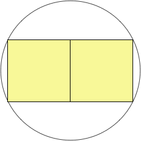 | 3. 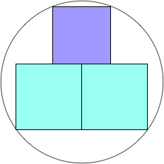 | ||
| s = √2 = 1.414+ Trivial. | s = 4 / √5 = 1.788+ Trivial. | s = 2.331+ Found by Erich Friedman in June 2011. |
4. 
| 5. 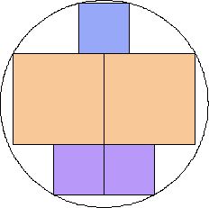 | 6. 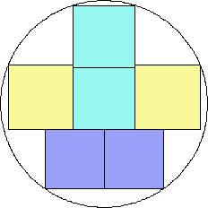 | ||
| s = 2√2 = 2.828+ Found by Erich Friedman in June 2011. | s = 3.204+ Found by Maurizio Morandi in July 2011. | s = 3.597+ Found by Maurizio Morandi in July 2011. |
7. 
| 8. 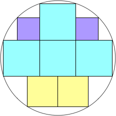 | 9. 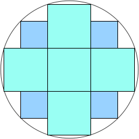 | ||
| s = (2√10 + √190) / 5 = 4.021+ Found by Erich Friedman in June 2011. | s = (10√2 + 5√10 + √190) / 10 = 4.373+ Found by Erich Friedman in June 2011. | s = (10√2 + 3√10) / 5 = 4.725+ Found by Erich Friedman in June 2011. |
| 10. 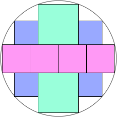 | 11. 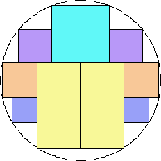 | 12. 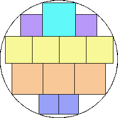 | ||
| s = 4.970+ Found by Erich Friedman in June 2011. | s = 5.185+ Found by Maurizio Morandi in July 2011. | s = 5.419+ Found by Maurizio Morandi in August 2011. |
| 13. 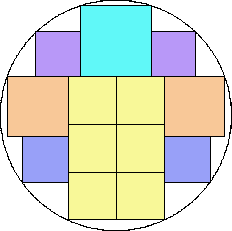 | 14. 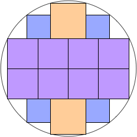 | 15. 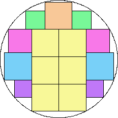 | ||
| s = 5.720+ Found by Maurizio Morandi in August 2011. | s = 6.005+ Found by Erich Friedman in June 2011. | s = 6.218+ Found by Maurizio Morandi in July 2011. |
| 16. 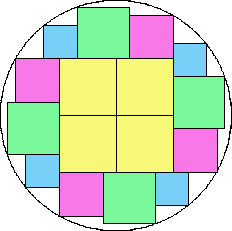 | 17. 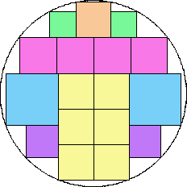 | 18. 
| ||
| s = 6.435+ Found by Maurizio Morandi in July 2011. | s = 6.595+ Found by Maurizio Morandi in July 2011. | s = 6.816+ Found by Maurizio Morandi in July 2011. |
| 19. 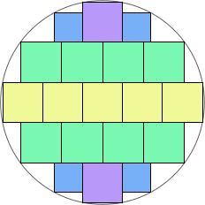 | 20. 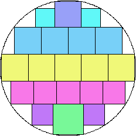 | 21. 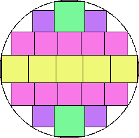 | ||
| s = 7.069+ Found by David W. Cantrell in July 2011. | s = 7.271+ Found by Maurizio Morandi in July 2011. | s = 7.473+ Found by Maurizio Morandi in July 2011. |